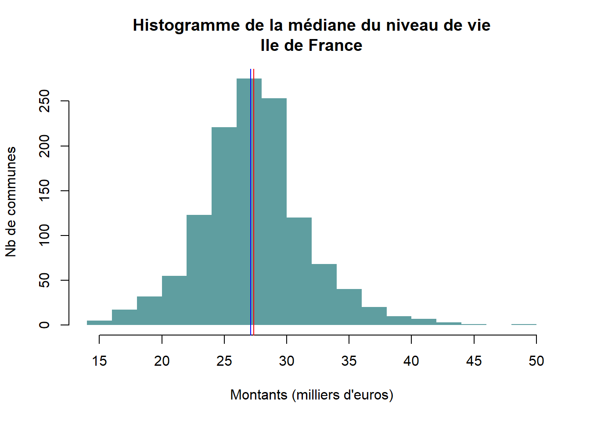
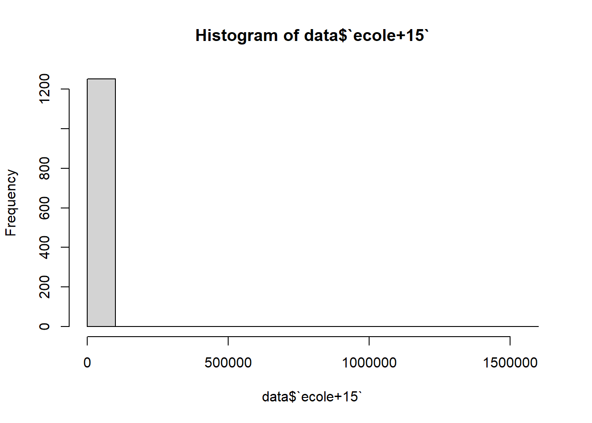
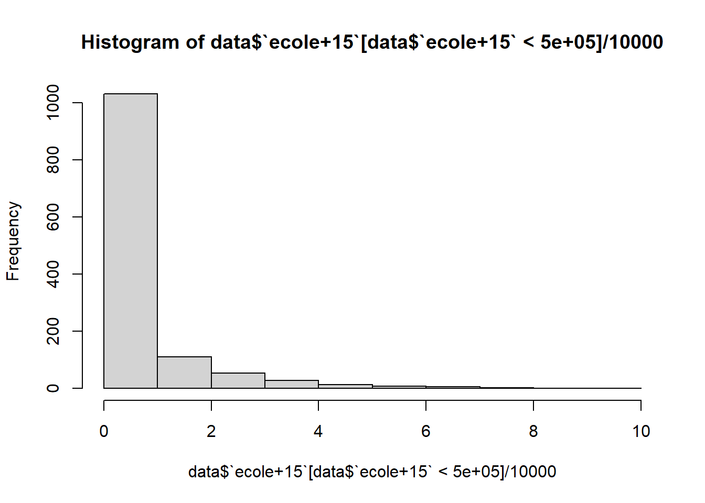
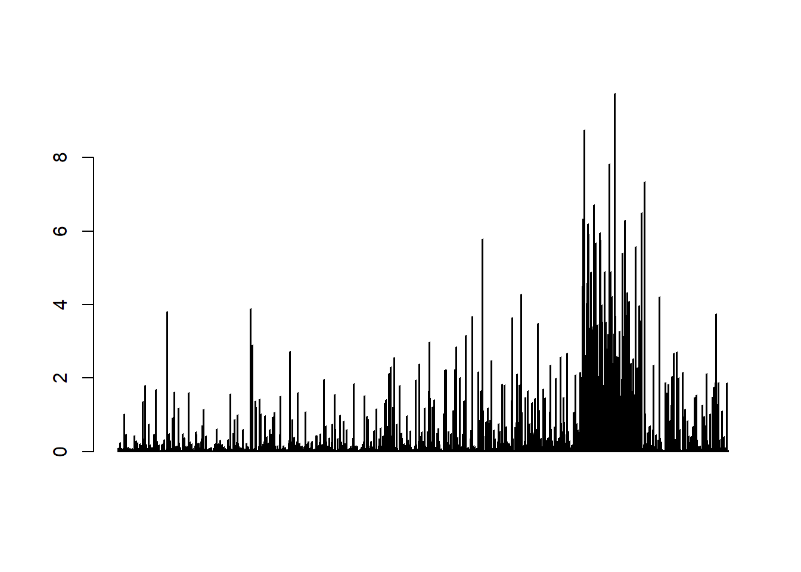
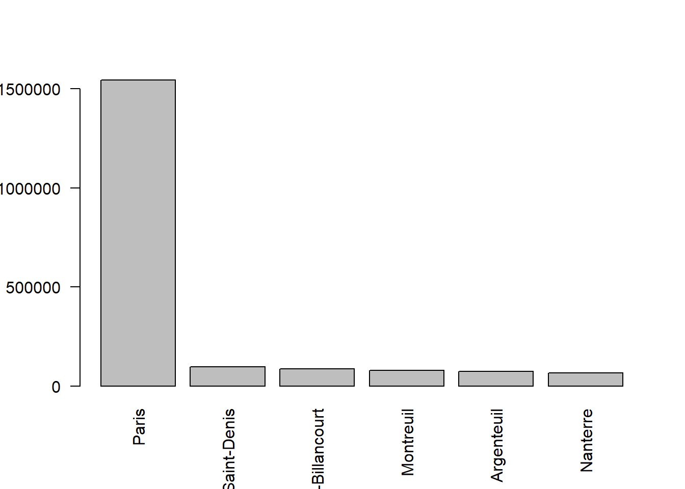
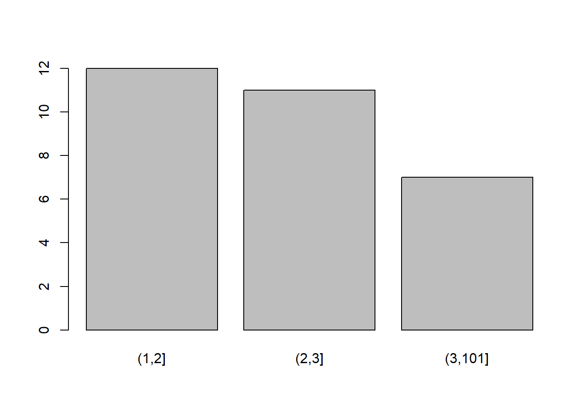
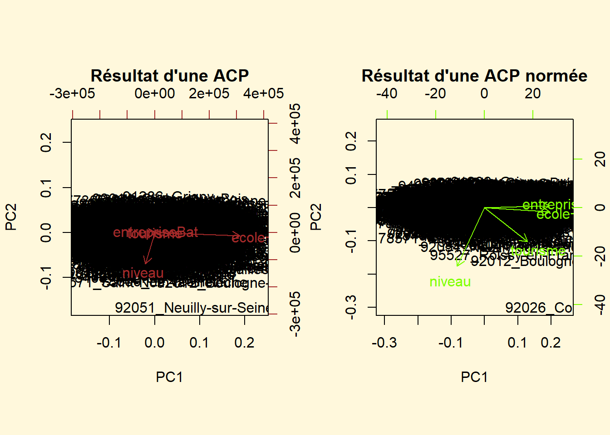
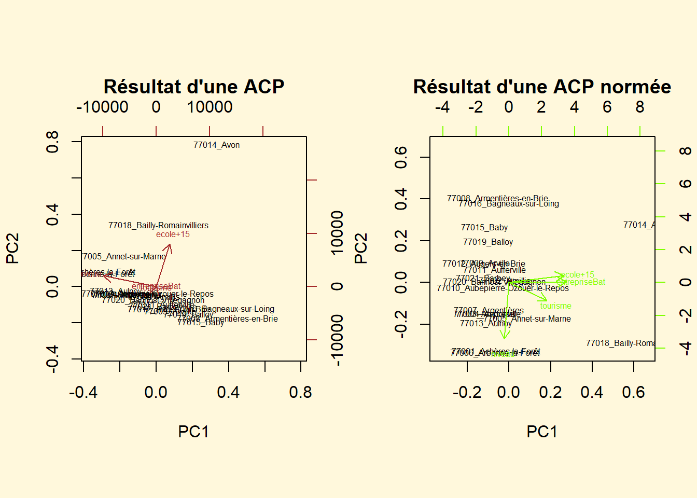

Questions autour du devoir maison
Plusieurs difficultés possibles en fonction de votre état d’avancement, le questionnaire sur le moodle permet d’aborder les problèmes considérés comme les plus importants.
Le cours sera complété à posteriori en fonction de vos interventions.
1 Utilisation stats locales
Combinaison avec le catalogue données insee permet de réfléchir dés le départ à sa problématique multivariée et à son échelle (commune / dpt / région)
Les difficultés peuvent être les suivantes :
comment sélectionner uniquement le niveau choisi ?
comment sélectionner uniquement la zone choisie ?
Prendre plus de variables permet d’affiner après.
2 Lecture du fichier = quelques paramètres
Attention à ne pas enregistrer le fichier sous le tableur si vous l’ouvrez pour le regarder !
Hormis le problème du séparateur, il existe deux problèmes récurrents
l’entête du tableau de données n’est pas sur la 1e ligne
il y a des valeurs NA dans le fichier (Not Available)
data <- read.csv("data/baseDM.csv")
# 1 seule variable, pb séparateur on passe en csv2
data <- read.csv2("data/baseDM.csv")
summary(data)## Insee...Statistiques.locales X X.1
## Length:1269 Length:1269 Length:1269
## Class :character Class :character Class :character
## Mode :character Mode :character Mode :character
## X.2 X.3 X.4
## Length:1269 Length:1269 Length:1269
## Class :character Class :character Class :character
## Mode :character Mode :character Mode :character# pb titre colonne
data <- read.csv2("data/baseDM.csv", skip = 3)
# chiffres non reconnus pour certaines variables
# éventuellement une valeur NA (not available) notamment si on charge des données dpt avec Mayotte
data <- read.csv2("data/baseDM.csv", skip = 3, na.strings = "N/A - secret statistique")Attention renommer les colonnes pour simplifier les opérations.
## [1] "Code"
## [2] "Libellé"
## [3] "Nombre.d.autres.hébergements.collectifs.de.tourisme.2025"
## [4] "Médiane.du.niveau.de.vie.2021"
## [5] "Unités.légales.dans.construction..en.nombre..2023"
## [6] "Nb.de.pers..non.scolarisées.de.15.ans.ou...2022"3 traitement des NA
Nous n’avons pas eu de NA sur les tableaux de l’OFGL.
##
## FALSE TRUE
## 1251 15les NA dans les formules
## [1] NA## [1] 27352.71## [1] NA## [1] 34218240## [1] 1266## [1] 27028.63Supprimer tous les NA d’un coup
Combien de données perdues ? sont-elles importantes ? Ne vaut-il pas mieux faire un filtre avant ?
Dans tous les cas, préciser par une phrase ce que sont ces NA.
4 Histogramme et barplot
4.1 Habillage d’un histogramme

# avec un peu de mise en forme
hist(data$niveau/1000, main = "Histogramme de la médiane du niveau de vie\nIle de France", xlab = "Montants (milliers d'euros)", ylab = "Nb de communes", border = NA, col = "cadetblue")
# affichage médiane / moyenne
abline(v=mean(data$niveau)/1000, col="red")
abline (v=median(data$niveau)/1000, col="blue")
4.2 Différence barplot / histogramme
L’histogramme reste lisible même s’il y a beaucoup de valeurs



Le barplot sert quand on zoome sur une situation
Il faut alors choisir la colonne d’étiquette
sel <- head(data [order(data$`ecole+15`, decreasing = T ),])
barplot(sel$`ecole+15`, names.arg = sel$nom, las = 2)
5 Table de contingence
Le problème du tableau de contingence, base du Khi2
Pour la variable entrepriseBat
## Min. 1st Qu. Median Mean 3rd Qu. Max.
## 0.0 6.0 15.0 83.5 61.0 18990.0# cut 5 50 500
data$batiment [data$entrepriseBat < 5] <- "Petit"
data$batiment [data$entrepriseBat > 5 & data$entrepriseBat < 50] <- "Moyen"
data$batiment [data$entrepriseBat > 49] <- "grand"
# ou bcp plus simple
data$categorie <- cut(data$entrepriseBat, breaks = c(0,50,500,5000,20000))
data$dpt <- substring(data$code,1,2)
table(data$dpt,data$batiment)##
## grand Moyen Petit
## 75 1 0 0
## 77 62 297 117
## 78 62 142 38
## 91 66 91 30
## 92 33 2 0
## 93 38 1 0
## 94 43 4 0
## 95 51 81 34##
## (0,50] (50,500] (500,5e+03] (5e+03,2e+04]
## 75 0 0 0 1
## 77 436 60 1 0
## 78 195 61 0 0
## 91 126 65 1 0
## 92 3 26 7 0
## 93 1 24 14 0
## 94 4 39 4 0
## 95 123 49 2 0Jouer sur les bornes pour avoir un tableau avec des valeur à + 5 condition du khi2
ou découper le tableau entres dpt
ceux avec bcp d’entreprises (77, 78, 91 et 95)
ceux avec moins d’entreprises (92, 93, 94)
Pour la variable tourisme
## Min. 1st Qu. Median Mean 3rd Qu. Max.
## 0.0000 0.0000 0.0000 0.2126 0.0000 100.0000

##
## 1 2 3 4 5 7 12 100
## 70 12 11 2 1 2 1 1
##
## 75 77 78 91 92 93 94 95
## (1,2] 0 2 1 1 5 0 3 0
## (2,3] 0 1 0 2 6 0 2 0
## (3,101] 1 1 0 0 3 0 1 16 ACP : conjurer l’illisbilité des graphiques
6.1 Matrice de chiffres
Attention aux étiquettes, il faut une matrice de chiffres
6.2 Filtrer
Paris pose pb
## tourisme niveau entrepriseBat ecole+15
## Min. : 0.0000 Min. :14790 Min. : 0.00 Min. : 74.0
## 1st Qu.: 0.0000 1st Qu.:24883 1st Qu.: 6.00 1st Qu.: 420.2
## Median : 0.0000 Median :27105 Median : 15.00 Median : 1047.0
## Mean : 0.1328 Mean :27351 Mean : 68.37 Mean : 5692.8
## 3rd Qu.: 0.0000 3rd Qu.:29528 3rd Qu.: 61.00 3rd Qu.: 4943.0
## Max. :12.0000 Max. :48010 Max. :1277.00 Max. :97422.0## tourisme niveau entrepriseBat ecole+15
## tourisme 1.0 0.0 0.4 0.5
## niveau 0.0 1.0 -0.3 -0.2
## entrepriseBat 0.4 -0.3 1.0 0.9
## ecole+15 0.5 -0.2 0.9 1.0
par(mfrow=c(1,2), bg="cornsilk")
biplot(res, main= "Résultat d'une ACP", col=c("black", "brown"))
biplot(res2, main= "Résultat d'une ACP normée", col= c("black", "chartreuse"))
6.3 Réduire arbitrairement la sélection
Le plus simple est de sélectionner quelques individus
par(mfrow=c(1,2), bg="cornsilk")
biplot(res, main= "Résultat d'une ACP", col=c("black", "brown"), cex = 0.5)
biplot(res2, main= "Résultat d'une ACP normée", col= c("black", "chartreuse"), cex=0.5)
Au niveau des individus, il faudrait procéder groupe par groupe pour identifier chacun, c’est le rôle des classifications.
L5GEABIM Analyses bivariées et multivariées